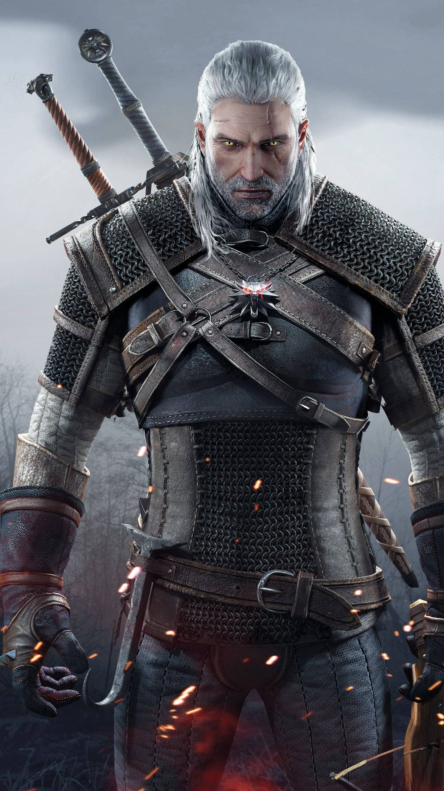
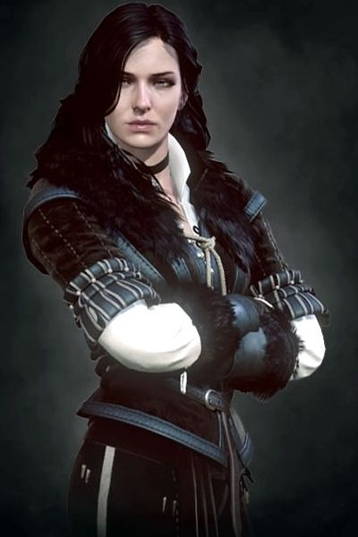
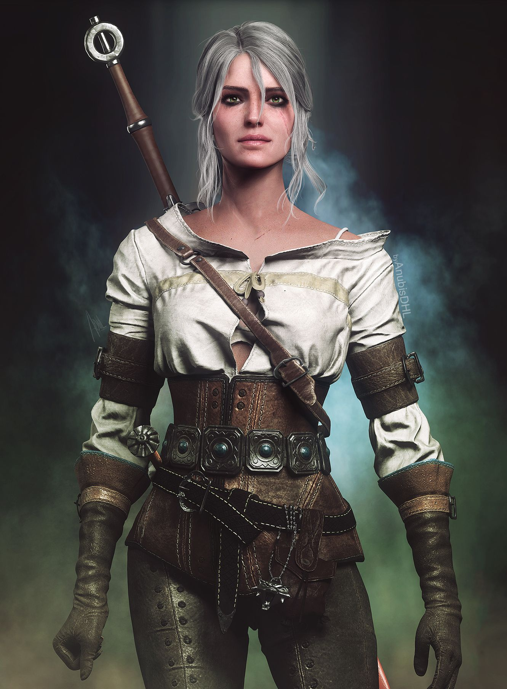
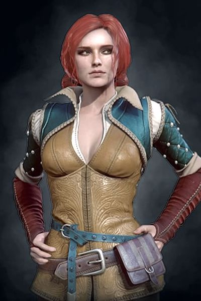
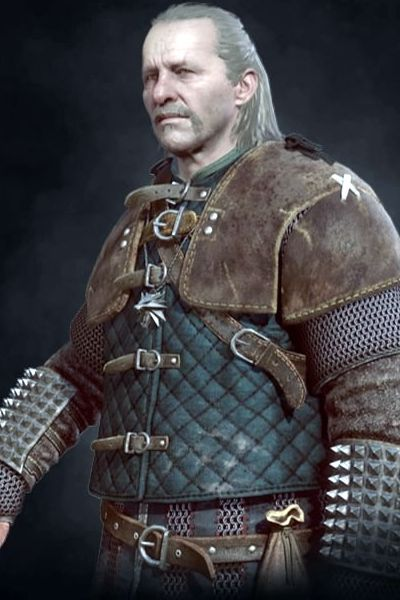

Geralt of Rivia a Kaer Morhen-i witcher iskola tanítványa, akit fehér haja miatt gyakran csak Fehér Farkasként emlegetnek. Mutációi és évtizedes tapasztalata a szörnyek legfélelmetesebb ellenfelévé tették, ám igazi ereje nem a kardforgatásban, hanem az emberi természet megértésében rejlik.

Yennefer hatalmas és büszke varázsló, akinek szépségét csak intelligenciája múlja felül. Bár hideg külsőt mutat, Geralt és Ciri iránti szeretete feltétel nélküli. Évszázados élettapasztalata, hatalmas mágikus tudása és éles eszjárása teszik őt a Kontinens egyik legfélelmetesebb varázslójává.

Cirilla Fiona Elen Riannon, egyszerűen csak Ciri, egy hercegnő, akit különleges képességei a próféciák középpontjába állítottak. Geralt és Yennefer fogadott lánya, akit witcher technikákra tanítottak. Az Idősebb Vér hordozójaként képes térben és időben utazni - ez a képesség teszi őt a Wild Hunt célpontjává.

Triss Merigold, a gesztenyebarna hajú varázslónő, Yennefer közeli barátja és Geralt régi szerelme. Novigrádban, ahol a varázslókat üldözik, ő vezeti az ellenállást. Bátorsága, kedvessége és önfeláldozó természete példaértékű.

A Kaer Morhen legidősebb witchere, Geralt mentora és apafigurája. Bár harci képességei már nem olyanok, mint fiatalkorában, tapasztalata és bölcsessége felbecsülhetetlen. Vesemir az, aki összetartja a szétszóródott witchereket.